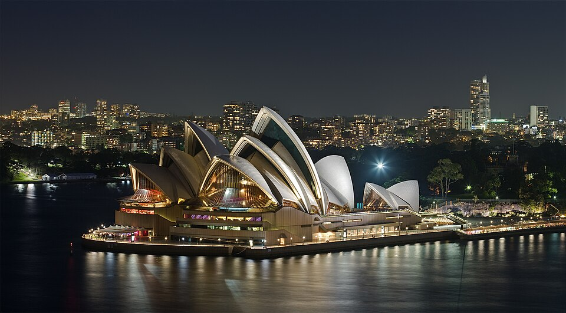
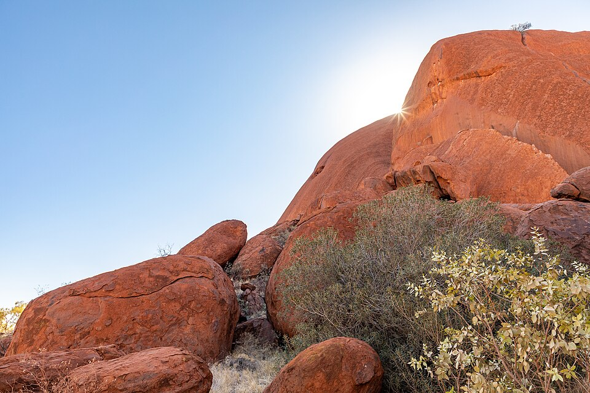
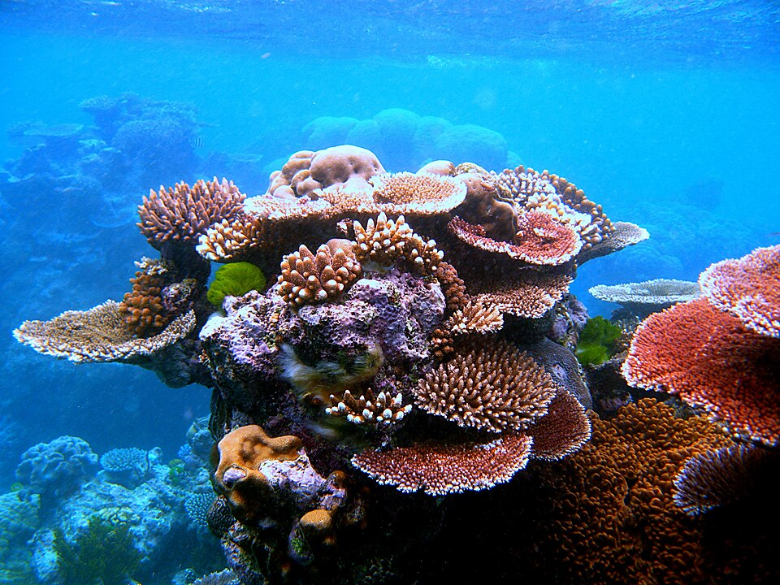
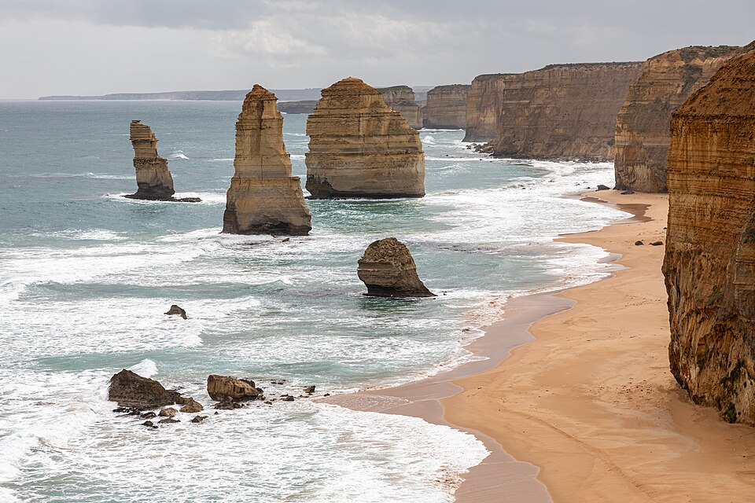
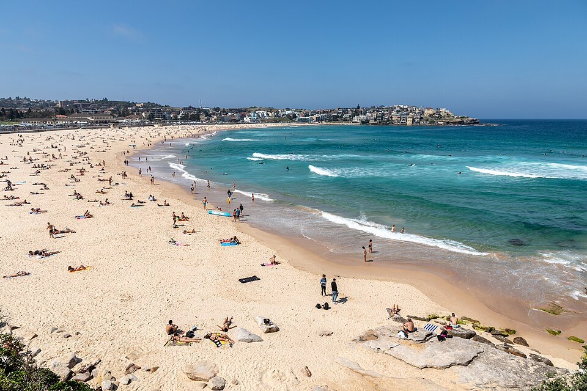

Places I'd Love to Visit
A list of the spots in Australia that are at the top of my travel wishlist — from iconic cities to red deserts and coral seas.
Sydney Opera House

One of the most recognizable buildings in the world. I'd love to see a performance here at night and then walk around Circular Quay with views of the Harbour Bridge.
Uluru (Ayers Rock)

A giant sandstone monolith sacred to the Anangu people. I want to be there at sunrise or sunset, when the rock changes color across the desert.
Great Barrier Reef

The largest coral reef system on Earth, visible even from space. Snorkeling or diving here among the coral and tropical fish is a dream of mine.
The Twelve Apostles

A series of dramatic limestone stacks rising out of the ocean. I'd drive the Great Ocean Road to reach them and stop at the lookouts along the way.
Bondi Beach

A lively beach just outside the city center. I'd love to do the Bondi to Bronte coastal walk and watch the surfers in the morning.